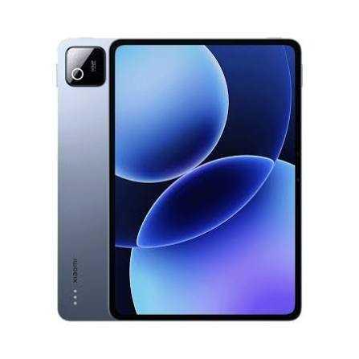

Mega für den Preis
Ich hätte nicht gedacht, dass man für so wenig Geld so ein schnelles Tablet bekommt. Klare Kaufempfehlung!
Kevin L. – 11.10.2026
Finde das perfekte Gerät für dich

Das Xiaomi Pad 8 Pro zeigt, dass ein starkes Tablet nicht teuer sein muss. Das scharfe Display mit 144 Hz sorgt für ein besonders flüssiges Bild beim Scrollen, Streamen und Spielen. Der leistungsstarke Prozessor kommt problemlos mit Alltagsaufgaben und auch aufwendigeren Spielen zurecht. Mit optionalem Stift und Tastatur lässt es sich außerdem gut für Schule und Arbeit nutzen. Wer viel Leistung zum fairen Preis sucht, ist hier genau richtig.
| Display | ca. 11,2 Zoll, 144 Hz |
| Speicher | 256 GB oder 512 GB |
| Eingabestift | Xiaomi Focus Pen (separat erhältlich) |
| Schnellladen | Ja |
| Betriebssystem | HyperOS (basiert auf Android) |
Wir haben die Preise der bekanntesten Online-Shops für dich verglichen. Der günstigste Anbieter ist farbig hervorgehoben.
| Anbieter | Preis | Versand | Lieferzeit | |
|---|---|---|---|---|
| Amazon Bester Preis | 479,00€ | kostenlos | 1-2 Werktage | Zum Shop |
| MediaMarkt | 499,00€ | kostenlos | 1-2 Werktage | Zum Shop |
| Saturn | 509,00€ | 4,99€ | 2-3 Werktage | Zum Shop |
| Otto | 569,69€ | 7,95 | 3-5 Werktage | Zum Shop |
Ich hätte nicht gedacht, dass man für so wenig Geld so ein schnelles Tablet bekommt. Klare Kaufempfehlung!
Kevin L. – 11.10.2026
Die 144 Hz merkt man bei Spielen richtig. Nur die vorinstallierten Apps nerven etwas, die musste ich erst löschen.
Julia H. – 28.10.2026
Das Tablet selbst ist top. Eine passende Hülle zu finden war aber schwieriger als bei Samsung oder Apple.
Murat Y. – 06.11.2026